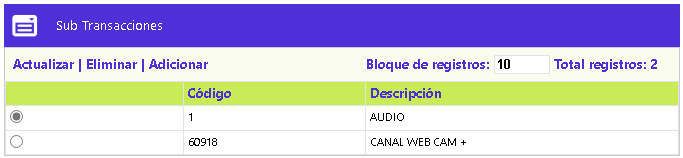
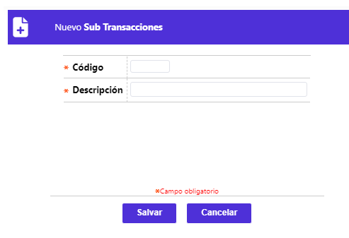
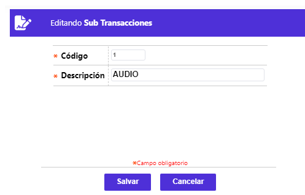

Sub transacciones
Mediante esta opción se facilita la consulta y/o mantenimiento, reservado a funcionarios de OpenCard S.A.S., de la tabla en la que se parametriza un atributo más de las transacciones, que permite diferenciarlas o puede ser utilizado para identificar la red a través de la cual se realizó la transacción o el medio por el cual se efectuó, tal como audio, etc. Esta información puede ser utilizada entre otras opciones para dirigir el movimiento a una transacción determinada en el traductor de transacciones. Además contine los siguientes enlaces: Adicionar, Actualizar y Eliminar.

El formulario contiene los enlaces: Actualizar, Eliminar y Adicionar.
Adicionar: Al activar ese enlace se despliega un nuevo formulario:

Descripción de campos
Código |
Campo numérico de 5 dígitos, obligatorio, en el que debe ingresarse el valor asignado a cada una de las diversas sub transacciones o identificadores de red. |
Descripción |
Campo alfanumérico, obligatorio, que en un máximo de 30 caracteres, debe contener el nombre o breve descriptivo de cada sub transacción o identificador de red. |
Actualizar: Al activar ese enlace se despliega un formulario en el cual el único campo modificable es Descripción.
